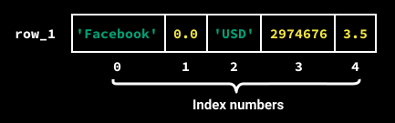
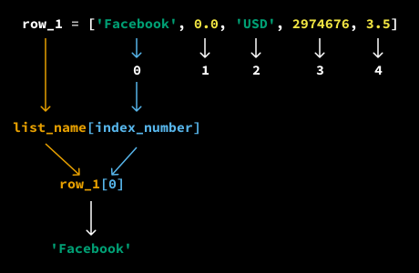
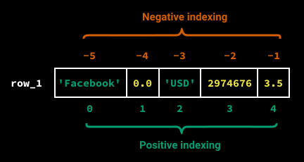
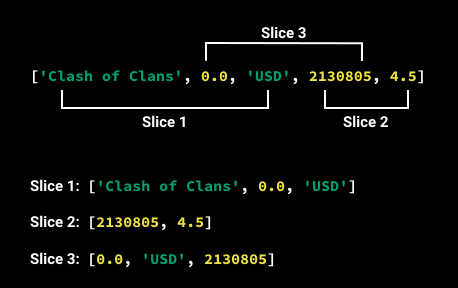
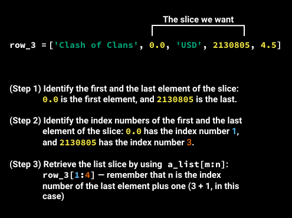
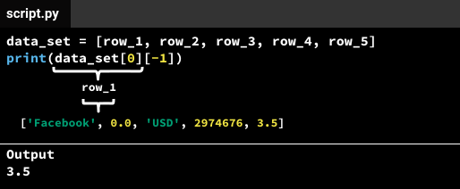

from docs.to_markdown import OUTPUT_DIR
Lists are one of the most powerful data types in Python.
With some fictive data we are going to analyze data about mobile apps.
We will be working with this data:
| Name | Price | Currency | Rating Count | Rating |
|---|---|---|---|---|
| 0.0 | USD | 2,974,676 | 3.5 | |
| 0.0 | USD | 2,161,558 | 4.5 | |
| Clash of Clans | 0.0 | USD | 2,130,805 | 4.5 |
| Temple Run | 0.0 | USD | 1,724,546 | 4.5 |
| Pandora - Music & Radio | 0.0 | USD | 1,126,879 | 4.0 |
We will call each value in the table a data point.
For instance, the first row (after the column titles) has five data points:
lets call this collection of data a dataset.
our dataset has 5 rows and 5 columns.
With all the knowledge up to know we could store this data in variables like this:
app_one_name = "Facebook"
app_one_price = 0.0
app_one_currency = "USD"
app_one_rating_count = 2974676
app_one_rating = 3.5
The text "Facebook" as a string
The price 0.0 as a float
The text "USD" as a string
The rating count 2,974,676 as an integer
The user rating 3.5 as a float
Creating a variable for each data point in our data set would be a cumbersome process. Fortunately,
we can store data more efficiently using lists.
This is how we can create a list of data points for the first row:
row_one = ["Facebook", 0.0, "USD", 2974676, 3.5]
print(row_one)
type_row_one = type(row_one)
To create the list above, we:
Typed out a sequence of data points and separated each with a comma: 'Facebook', 0.0, 'USD', 2974676, 3.5
Surrounded the sequence with brackets: ['Facebook', 0.0, 'USD', 2974676, 3.5]
After we created the list, we stored it in the computer's memory by assigning it to a variable named row_one.
To create a list of data points, we only need to:
Separate the data points with a comma.
Surround the sequence of data points with brackets.
There are 2 ways to create an empty list in python:
Functionally there the same.
However there a speed tradeoffs and that is due to implementation details in the C compiler behind python.
To see the speed difference we can use the timeit module.
from timeit import timeit
timeit("[]")
0.040084982867934334
timeit("list()")
0.17704233359267718
We can see that the [] is faster than the list() function. By a big margin.
content in a list is seperated by a comma.
Example:
["item1", "item2", "item3"]
Now let's create five lists, one for each row in our dataset:
row_one = ['Facebook', 0.0, 'USD', 2974676, 3.5]
row_two = ['Instagram', 0.0, 'USD', 2161558, 4.5]
row_three = ['Clash of Clans', 0.0, 'USD', 2130805, 4.5]
row_four = ['Temple Run', 0.0, 'USD', 1724546, 4.5]
row_five = ['Pandora - Music & Radio', 0.0, 'USD', 1126879, 4.0]
A list can contain a variety of data types. A list like [4, 5, 6] has identical data types (only integers),
while the list ['Facebook', 0.0, 'USD', 2974676, 3.5] has mixed data types:
One integer (2974676)
The ['Facebook', 0.0, 'USD', 2974676, 3.5] list has five data points.
To find the length of a list, we can use the len() command we discussed earlier:
Example:
row_one = ['Facebook', 0.0, 'USD', 2974676, 3.5]
print(len(row_one))
list_one = [1, 2, 3]
print(len(list_one))
list_two = []
print(len(list_two))
Output would be:
- 5
- 3
- 0
For small lists, we can just count the data points on our screens to find the length,
but the len() command will prove very useful whenever you work with lists containing many elements,
or need to write code for data where you don't know the length ahead of time.
Each element (data point) in a list has a specific number associated with it,
called an index number. The indexing always starts at 0,
so the first element will have the index number 0,
the second element the index number 1, and so on.

To quickly find the index of a list element,
identify its position number in the list, and then subtract 1.
For example, the string 'USD' is the third element of the list (position number 3),
so its index number must be 2 since 3 - 1 = 2.
or what i find easier. just remember that the first element is 0 and the second is 1 and so on
The index numbers help us retrieve individual elements from a list.
Looking back at the list row_one from the code example above,
we can retrieve the first element (the string 'Facebook') with the index number 0 by running the code row_one[0].
row_one = ['Facebook', 0.0, 'USD', 2974676, 3.5]
print(row_one[0])
Gives us the output: "Facebook"
The syntax for retrieving individual list elements follows the model list_name[index_number].
For instance, the name of our list above is row_one and the index number of the first element is 0
— following the list_name[index_number] model, we get row_one[0],
where the index number 0 is in square brackets after the variable name row_one.

This is how we can retrieve each element in row_one:
row_one = ['Facebook', 0.0, 'USD', 2974676, 3.5]
print(row_one[0])
print(row_one[1])
print(row_one[2])
print(row_one[3])
print(row_one[4])
output:
Retrieving list elements makes it easier to perform operations.
For instance, we can select the ratings for Facebook and Instagram,
and find the average or the difference between the two:
row_one = ['Facebook', 0.0, 'USD', 2974676, 3.5]
row_two = ['Instagram', 0.0, 'USD', 2161558, 4.5]
difference = row_one[4] - row_two[4]
average_rating = (row_one[4] + row_two[4]) / 2
print(difference)
print(average_rating)
Output:
Let's use list indexing to extract the number of ratings from the first three rows
and then average them:
row_one = ['Facebook', 0.0, 'USD', 2974676, 3.5]
row_two = ['Instagram', 0.0, 'USD', 2161558, 4.5]
row_three = ['Clash of clans', 0.0, 'USD', 2130805, 4.5]
ratings_one = row_one[3]
ratings_two = row_two[3]
ratings_three = row_three[3]
total = ratings_one + ratings_two + ratings_three
average = total / 3
print(average)
Output
In Python, we have two indexing systems for lists:
Negative indexing is a feature in Python that allows us to access elements from the end of a list.
here is an image to help you visually:

In practice, we almost always use positive indexing to retrieve list elements.
Negative indexing is useful when we want to select the last element of a list.
especially if the list is long, and we can't tell the length by normal counting.
Example:
row_one = ['Facebook', 0.0, 'USD', 2974676, 3.5]
print(row_one[-1])
print(row_one[-4])
What do you think the output will be?
its the same number: 3.5
from the beginning we count 0, 1, 2, 3, 4
from the end we count -1, -2, -3, -4, -5
What would happend if you use an index that is out of range?
row_one = ['Facebook', 0.0, 'USD', 2974676, 3.5]
print(row_one[5])
Traceback (most recent call last):
File "<input>", line 1, in <module>
IndexError: list index out of range <------------
Yes an IndexError!! so thats helpfull isn't it?
list_name[start : end : step]
Parameters:
Instead of selecting list elements individually,
we can use a syntax shortcut to select two or more consecutive elements:
row_three = ['Clash of Clans', 0.0, 'USD', 2130805, 4.5]
coc_pricing_data = row_three[0:3]
print(coc_pricing_data)
Output:
['Clash of Clans', 0.0, 'USD']When we select the first n elements (n stands for a number) from a list named a_list,
we can use the syntax shortcut a_list[0:n].
In the example above, we needed to select the first three elements from the list row_three,
so we used row_three[0:3].
When we selected the first three elements,
we sliced a part of the list.
For this reason, the process of selecting a part of a list is called list slicing.
There are many ways that we might want to slice a list:

To retrieve any list slice we want:
a_list[m:n], where:
When we need to select the first or last x elements (x stands for a number),
we can use even simpler syntax shortcuts:
a_list[:x] when we want to select the first x elements.a_list[-x:] when we want to select the last x elements.Example:
row_three = ['Clash of Clans', 0.0, 'USD', 2130805, 4.5]
first_three = row_three[:3]
last_three = row_three[-3:]
Just know it exists. if you ever come across it you know what it does.
Python List of Lists
Previously, we introduced lists as a better alternative to using one variable per data point.
Instead of having a separate variable for each of the five data points 'Facebook', 0.0, 'USD', 2974676, 3.5,
we can bundle the data points together into a list, and then store the list in a single variable.
So far, we've been working with a data set having five rows,
and we've been storing each row as a list in a separate variable (the variables row_1, row_2, row_3, row_4, and row_5).
If we had a data set with 5,000 rows, however, we'd end up with 5,000 variables,
which will make our code messy and almost impossible to work with.
To solve this problem, we can store our five variables in a single list:
row_one = ['Facebook', 0.0, 'USD', 2974676, 3.5]
row_two = ['Instagram', 0.0, 'USD', 2161558, 4.5]
row_three = ['Clash of Clans', 0,0, 'USD', 2130805, 4.5]
row_four = ['Temple Run', 0.0, 'USD', 1724546, 4.5]
row_five = ['Pandora - Music & Radio', 0.0, 'USD', 1126879, 4.0]
data_set = [row_one, row_two, row_three, row_four, row_five]
data_set
[
['Facebook', 0.0, 'USD', 2974676, 3.5],
['Instagram', 0.0, 'USD', 2161558, 4.5],
['Clash of Clans', 0, 0, 'USD', 2130805, 4.5],
['Temple Run', 0.0, 'USD', 1724546, 4.5],
['Pandora - Music & Radio', 0.0, 'USD', 1126879, 4.0]
]
As we can see, data_set is a list that stores five other lists (row_1, row_2, row_3, row_4, and row_5).
A list that contains other lists is called a list of lists.
The data_set variable is still a list,
which means we can retrieve individual list elements and perform list slicing using the syntax we learned. Below, we:
data_set[:2].row_one = ['Facebook', 0.0, 'USD', 2974676, 3.5]
row_two = ['Instagram', 0.0, 'USD', 2161558, 4.5]
row_three = ['Clash of Clans', 0,0, 'USD', 2130805, 4.5]
row_four = ['Temple Run', 0.0, 'USD', 1724546, 4.5]
row_five = ['Pandora - Music & Radio', 0.0, 'USD', 1126879, 4.0]
data_set = [row_one, row_two, row_three, row_four, row_five]
print(data_set[0])
print(data_set[-1])
print(data_set[:2])
['Facebook', 0.0, 'USD', 2974676, 3.5]
['Pandora - Music & Radio', 0.0, 'USD', 1126879, 4.0]
[['Facebook', 0.0, 'USD', 2974676, 3.5], ['Instagram', 0.0, 'USD', 2161558, 4.5]]
We'll often need to retrieve individual elements from a list that's part of a list of lists — for instance,
we may want to retrieve the value 3.5 from ['Facebook', 0.0, 'USD', 2974676, 3.5],
which is part of the data_set list of lists.
Below, we extract 3.5 from data_set using what we've learned:
row_one = ['Facebook', 0.0, 'USD', 2974676, 3.5]
row_two = ['Instagram', 0.0, 'USD', 2161558, 4.5]
row_three = ['Clash of Clans', 0,0, 'USD', 2130805, 4.5]
row_four = ['Temple Run', 0.0, 'USD', 1724546, 4.5]
row_five = ['Pandora - Music & Radio', 0.0, 'USD', 1126879, 4.0]
data_set = [row_one, row_two, row_three, row_four, row_five]
fb_row = data_set[0]
print(fb_row)
fb_rating = fb_row[-1]
print(fb_rating)
['Facebook', 0.0, 'USD', 2974676, 3.5]
3.5
Above, we retrieved 3.5 in two steps: we first retrieved data_set[0],
and then we retrieved fb_row[-1].
However, there's an easier way to retrieve the same value of 3.5 by chaining the two indices ([0] and [-1]) — the code data_set[0][-1] retrieves 3.5:

Above, we've seen two ways of retrieving the value 3.5.
Both ways lead to the same output (3.5),
but the second way involves less typing because it elegantly combines the steps we see in the first case.
While you can choose either option, people generally choose the second one.
Adds an element to the end of the list
fruits = ["apple", "banana"]
fruits.append("orange")
# fruits is now ["apple", "banana", "orange"]
Adds multiple elements from an iterable (list, tuple, etc.) to the end
fruits = ["apple", "banana"]
more_fruits = ["orange", "grape"]
fruits.extend(more_fruits)
# fruits is now ["apple", "banana", "orange", "grape"]
Adds an element at a specific position
fruits = ["apple", "banana"]
fruits.insert(1, "orange")
# fruits is now ["apple", "orange", "banana"]
Removes the first occurrence of a specific value
fruits = ["apple", "banana", "apple", "grape"]
fruits.remove("apple")
# fruits is now ["banana", "apple", "grape"]
Removes and returns an element at a specific index (or last element if no index given)
fruits = ["apple", "banana", "grape"]
last_fruit = fruits.pop() # removes and returns "grape"
first_fruit = fruits.pop(0) # removes and returns "apple"
Removes all elements from the list
fruits = ["apple", "banana", "grape"]
fruits.clear()
# fruits is now []
Returns the index of the first occurrence of a value
fruits = ["apple", "banana", "grape", "banana"]
banana_index = fruits.index("banana") # returns 1
Returns the number of occurrences of a value
fruits = ["apple", "banana", "grape", "banana"]
banana_count = fruits.count("banana") # returns 2
Sorts the list in place (modifies original list)
numbers = [3, 1, 4, 1, 5]
numbers.sort()
# numbers is now [1, 1, 3, 4, 5]
# Sort with reverse order
numbers.sort(reverse=True)
# numbers is now [5, 4, 3, 1, 1]
# Sort strings
fruits = ["banana", "apple", "Cherry"]
fruits.sort() # Case-sensitive sort
# fruits is now ["Cherry", "apple", "banana"]
fruits.sort(key=str.lower) # Case-insensitive sort
# fruits is now ["apple", "banana", "Cherry"]
Reverses the order of elements in place
fruits = ["apple", "banana", "grape"]
fruits.reverse()
# fruits is now ["grape", "banana", "apple"]
Creates a shallow copy of the list
fruits = ["apple", "banana", "grape"]
fruits_copy = fruits.copy()
Returns the length of the list (not a method, but a built-in function)
fruits = ["apple", "banana", "grape"]
length = len(fruits) # returns 3
Checks if an element exists in the list (not a method, but an operator)
fruits = ["apple", "banana", "grape"]
has_apple = "apple" in fruits # returns True
fruits = ["apple", "banana", "grape", "banana", "cherry"]
# Remove last banana and insert orange in its place
last_banana_index = fruits.index("banana", fruits.index("banana") + 1)
fruits.pop(last_banana_index)
fruits.insert(last_banana_index, "orange")
numbers = [1, 2, 3, 4, 5]
# Replace middle elements with new values
numbers[1:4] = [8, 9, 10]
# numbers is now [1, 8, 9, 10, 5]
# Remove duplicates while preserving order
fruits = ["apple", "banana", "apple", "cherry"]
unique_fruits = list(dict.fromkeys(fruits))
# unique_fruits is ["apple", "banana", "cherry"]
# Find all indices of an element
fruits = ["apple", "banana", "apple", "cherry", "apple"]
apple_indices = [i for i in range(len(fruits)) if fruits[i] == "apple"]
# apple_indices is [0, 2, 4]